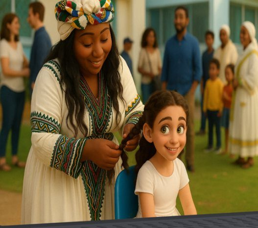

We catch your frame
סרטוני AI שמספרים את הסיפור שלכם
יש לכם סיפור? אנחנו נהפוך אותו לסרטון שמרגש.
לבתי ספר, עמותות, אירועים ועסקים. מהרעיון ועד הסרטון המוכן.



ה-AI הוא רק הכלי. הסיפור הוא העיקר.
קודם הסיפור
מתחילים ממה שאתם רוצים להגיד. האפקטים אחר כך.
כל עולם שתדמיינו, על המסך
דמויות ועולמות שבצילום רגיל היו עולים הון.
אתם מספרים, אנחנו מפיקים
תסריט, הפקה, קריינות ועריכה. הכול אצלנו.
תראו בעצמכם
סיפור אחד ואנשים אמיתיים, בכל סרטון.
רוצים סרטון כזה משלכם?
למי זה מתאים
בתי ספר ועמותות
ערכים ורגעי קהילה, בסרטון שמדבר לתלמידים, להורים ולצוות.
- סרטוני הסברה וחינוך
- סרטונים לטקסים ולאירועי קהילה
- סיפורים אישיים ועדויות
- גיוס תרומות והעלאת מודעות
אירועים ורגעים אישיים
במקום עוד מצגת תמונות: סרטון שמספר את הסיפור שלכם ומרגש את כל האולם.
- סרטוני חתונה
- בר ובת מצווה
- ימי הולדת והפתעות
- סיפורי חיים ומתנות אישיות
סרטונים לעסקים
מי אתם ולמה דווקא אתם. לאתר, לפרסום ולרשתות.
- סרטוני תדמית
- סרטוני מוצר ושירות
- פרסומות וקמפיינים
- גרסאות לרילס, טיקטוק ויוטיוב
מרעיון לסרטון בארבעה שלבים
כל סרטון עובר אותו תהליך מסודר, כדי שתדעו בכל שלב איפה אנחנו ומה הלאה.
- 01
שיחת היכרות
מדברים בטלפון או בוואטסאפ: מה המטרה, למי מדברים ואיפה הסרטון יוצג. כאן אני מקשיבה ומבינה מה הסיפור שלכם באמת.
- 02
תסריט וסטוריבורד
אני כותבת תסריט ובונה סטוריבורד שמראה איך כל סצנה תיראה. אתם מאשרים, ורק אז מתחילים להפיק.
- 03
הפקה ב-AI
דמויות, עולמות, קריינות ומוזיקה, בסגנון שבחרנו יחד. אם יש תמונות של האנשים או של המקום, הדמויות נבנות לפיהן.
- 04
תיקונים ומסירה
אתם צופים, מעירים, ואני מתקנת. בסוף מקבלים קבצים מוכנים לכל מסך: מקרן באולם, יוטיוב, אינסטגרם או וואטסאפ.
 נירית אלקובייוצרת וידאו ותסריטאית
נירית אלקובייוצרת וידאו ותסריטאית
אני נירית. כל סרטון שלי מתחיל בסיפור.
אני יוצרת וידאו ותסריטאית. אחרי שנים של עריכת תוכן ווידאו, כתיבה ועבודה בעולם החינוך, למדתי שסרטון טוב לא מתחיל במחשב. הוא מתחיל בשיחה. לפני שאני פותחת כלי AI אחד, אני רוצה להבין מי אתם, מה חשוב לכם ולמי אתם מדברים. משם אני כותבת את התסריט, בונה סטוריבורד ויוצרת את העולם הוויזואלי, עד שהרעיון שלכם הופך לסרטון ברור, חכם ומרגש.
ה-AI הוא המצלמה שלי. הסיפור תמיד שלכם.
- תסריטאות
- כתיבה יצירתית
- סטוריטלינג
- עריכת תוכן ווידאו
- חינוך
- יצירה בכלי AI
שאלות נפוצות
כמה זמן לוקח להפיק סרטון?
תלוי באורך ובמורכבות. בשיחה הראשונה נקבע לוח זמנים, ואם יש תאריך יעד, כמו אירוע או טקס, נעבוד לפיו.
אפשר לבקש תיקונים?
בטח. מאשרים תסריט לפני ההפקה, ויש סבב תיקונים על הסרטון. הכול כתוב מראש בהצעת המחיר.
כמה זה עולה?
תלוי באורך, בסגנון ובמורכבות. ספרו לנו מה אתם צריכים ותקבלו הצעת מחיר מפורטת: תסריט, הפקה, קריינות, מוזיקה וכתוביות.
צריך להביא חומרים או לצלם משהו?
לא חובה. מספיק סיפור או רעיון. תמונות של האנשים או של המקום יעזרו לדמויות להיראות כמו במציאות.